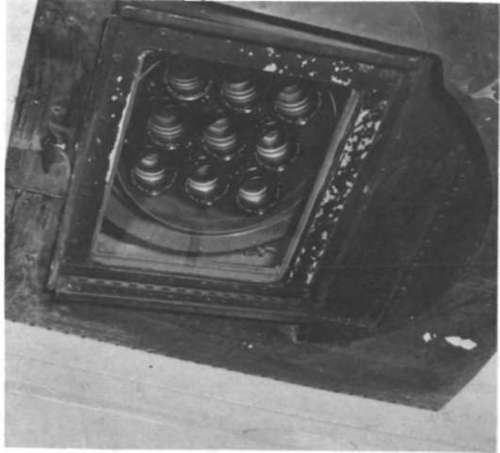
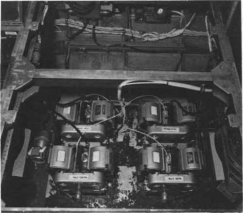
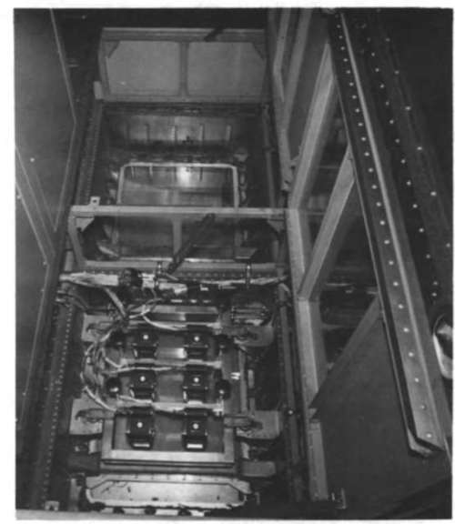

Multispectral Cameras
Description
This section is from the book "Aerial Cameras, Aerial Films, And Film Processing", by Richard W. Underwood.
Multispectral Cameras
If one wishes to record information from a discrete portion of the electromagnetic spectrum, a film highly sensitive to the desired portion of the spectrum is used in conjunction with a filter designed to eliminate unwanted information. If two or more such recordings are made simultaneously, the end result is multispectral photography. Multispectral cameras fall into two classifications:
(1) A single camera may be designed to secure multiple recordings on one or several film types. This may be accomplished by the use of two or more lenses, each with a specified filter, or through the use of a single lens and one or more beamsplitters consisting of special mirrors and/or filters to place the image at selected locations on the film. There may be a single roll of film in the magazine or several rolls having the same or different types of emulsion. A good example would be the Itek experimental camera shown in figure 8. It uses nine lenses to record simultaneously on three rolls of 70-mm film. There are several other cameras of this type available, using various techniques to achieve multispectral results.
Figure 8. Itek nine-lens experimental multispectral camera.
(2) A gang of two or more cameras may be used to record with various lens-filter combinations simultaneously. Such an arrangement could employ several large-format aerial mapping cameras (figure 9) or, as I have seen, up to 12 of the 70-mm Hasselblad EL cameras (figure 10). In the Manned Spacecraft Center's Earth Resources Survey Program, multispectral photography has been successfully secured using the following camera systems:
(a) Multiple 70-mm Hasselblad EL
(b) Itek nine-lens
(c) Multiple Wild RC-8 and Zeiss RMK systems
(d) Multiple Chicago Aerial KS-62 using 125-mm film
Figure 9. Four Chicago Aerial KS-62 75-mm multispectral cameras mounted in aircraft.
Apollo 9 used four Hasselblad EL cameras with' various film-filter combinations to secure many multispectral space photographs.
In the Skylab Program, NASA will use a specially developed Itek multispectral system of high resolution and mapping precision, which takes six precisely matched photographs simultaneously.
If one chooses to develop a program using multispectral photography, a great many options can be exercised. Before an effective and practical program can be introduced, a great deal of experimentation is necessary. The use of a camera system like the Hasselblad EL has a number of advantages for experimentation. It is fairly inexpensive, and it is readily available in most parts of the world. Several can be fairly easily synchronized. Filters and lenses are not expensive, and they are easily interchanged. The 70-mm film magazines hold approximately 150 exposures each, depending on film thickness, and are quickly changed. This permits a great many experiments to be performed quite quickly at a minimal cost. It should also be noted that camera servicing facilities are worldwide.
You may, of course wish to consider other systems of a simpler or a more complex nature. The important thing is that your geoscientists and photographic scientists become fully aware of both the unique advantages and the limitations of multispectral photography.
Figure 10. Six Hasselblad EL cameras for multispectral aerial photography.
Continue to: